openshift 4.14 Network Observability
openshift 4.14 introduce eBPF as agent for netoberv, we try it out, and see how it works. We focus on egress IP senario, and want to see RTT value from backend service outside of cluster.
- https://docs.openshift.com/container-platform/4.14/observability/network_observability/installing-operators.html
here is the architecture of this lab:
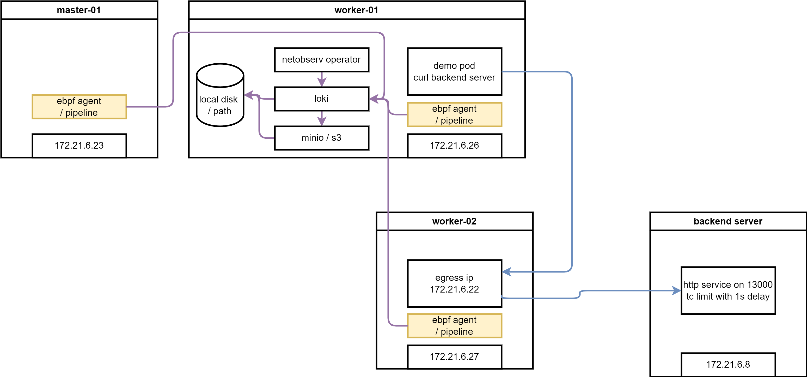
try with loki
install loki
RTT value need loki as backend, we install loki first.
install a minio as backend
we need s3 storage, we will use minio as backend, and use local disk as storage.
deploy a minio for testing only, not for production. becuase official minio will enable https, it will bring so many trouble into app integration, we use a old version minio.
# oc new-project llm-demo
# oc label --overwrite ns llm-demo \
# pod-security.kubernetes.io/enforce=privileged
oc new-project netobserv
# on helper
S3_NAME='netobserv'
S3_NS='netobserv'
S3_IMAGE='docker.io/minio/minio:RELEASE.2021-06-17T00-10-46Z.hotfix.35a0912ff'
cat << EOF > ${BASE_DIR}/data/install/s3-codellama.yaml
---
apiVersion: v1
kind: Service
metadata:
name: minio-${S3_NAME}
spec:
ports:
- name: minio-client-port
port: 9000
protocol: TCP
targetPort: 9000
selector:
app: minio-${S3_NAME}
# ---
# apiVersion: route.openshift.io/v1
# kind: Route
# metadata:
# name: s3-${S3_NAME}
# spec:
# to:
# kind: Service
# name: minio-${S3_NAME}
# port:
# targetPort: 9000
---
apiVersion: v1
kind: PersistentVolumeClaim
metadata:
name: minio-${S3_NAME}-pvc
spec:
accessModes:
- ReadWriteOnce
resources:
requests:
storage: 100Gi
storageClassName: hostpath-csi
---
apiVersion: apps/v1
kind: Deployment
metadata:
name: minio-${S3_NAME}
labels:
app: minio-${S3_NAME}
spec:
replicas: 1
selector:
matchLabels:
app: minio-${S3_NAME}
template:
metadata:
labels:
app: minio-${S3_NAME}
spec:
initContainers:
- name: create-demo-dir
image: docker.io/busybox
command: ["mkdir", "-p", "/data1/demo"]
volumeMounts:
- name: data
mountPath: "/data1"
containers:
- args:
- server
- /data1
env:
- name: MINIO_ACCESS_KEY
value: admin
- name: MINIO_SECRET_KEY
value: redhatocp
image: ${S3_IMAGE}
imagePullPolicy: IfNotPresent
name: minio
nodeSelector:
kubernetes.io/hostname: "worker-01-demo"
securityContext:
allowPrivilegeEscalation: false
capabilities:
drop:
- ALL
runAsNonRoot: true
seccompProfile:
type: RuntimeDefault
volumeMounts:
- mountPath: "/data1"
name: data
volumes:
- name: data
persistentVolumeClaim:
claimName: minio-${S3_NAME}-pvc
EOF
oc create -n netobserv -f ${BASE_DIR}/data/install/s3-codellama.yaml
# oc delete -n netobserv -f ${BASE_DIR}/data/install/s3-codellama.yaml
# open in browser to check, and create bucket 'demo'
# http://s3-netobserv-netobserv.apps.demo-gpu.wzhlab.top/
install loki operator
we have a s3 storage, and we will install loki operator.
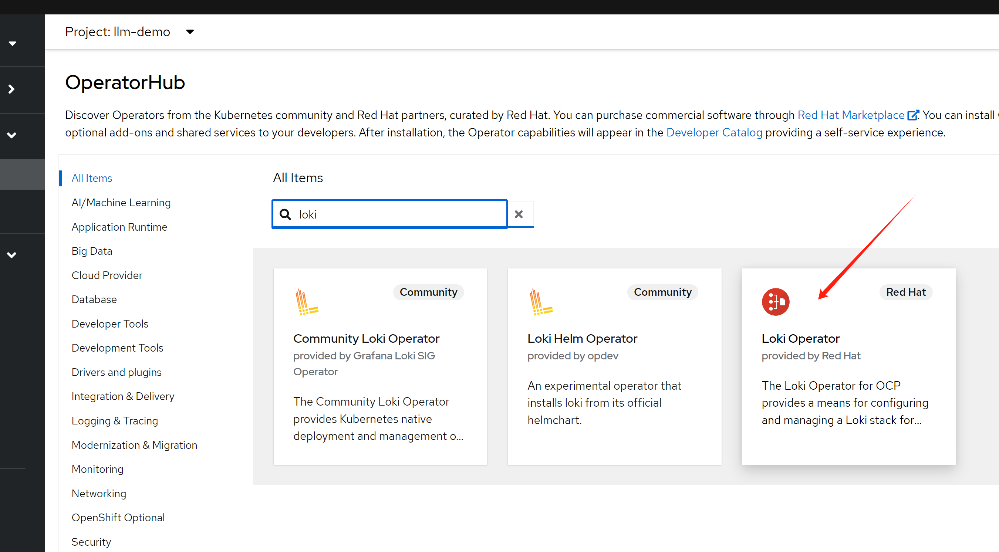
# oc new-project netobserv
# netobserv is a resource-hungry application, it has high requirements for the underlying loki, we configure the maximum gear, and the number of replicas, etc., to adapt to our test environment.
cat << EOF > ${BASE_DIR}/data/install/loki-netobserv.yaml
---
apiVersion: v1
kind: Secret
metadata:
name: loki-s3
stringData:
access_key_id: admin
access_key_secret: redhatocp
bucketnames: demo
endpoint: http://minio-netobserv.netobserv.svc.cluster.local:9000
# region: eu-central-1
---
apiVersion: loki.grafana.com/v1
kind: LokiStack
metadata:
name: loki
spec:
size: 1x.medium
replication:
factor: 1
storage:
schemas:
- version: v12
effectiveDate: '2022-06-01'
secret:
name: loki-s3
type: s3
storageClassName: hostpath-csi
tenants:
mode: openshift-network
openshift:
adminGroups:
- cluster-admin
template:
gateway:
replicas: 1
ingester:
replicas: 1
indexGateway:
replicas: 1
EOF
oc create --save-config -n netobserv -f ${BASE_DIR}/data/install/loki-netobserv.yaml
# to delete
# oc delete -n netobserv -f ${BASE_DIR}/data/install/loki-netobserv.yaml
# oc get pvc -n netobserv | grep loki- | awk '{print $1}' | xargs oc delete -n netobserv pvc
# run below, if reinstall
oc adm groups new cluster-admin
oc adm groups add-users cluster-admin admin
oc adm policy add-cluster-role-to-group cluster-admin cluster-admininstall net observ
we will install net observ operator, the installation is simple, just follow the official document. If you use eBPF agent, there seems have bugs with the installation steps, it is better to restart nodes to make the ebpf agent function well.
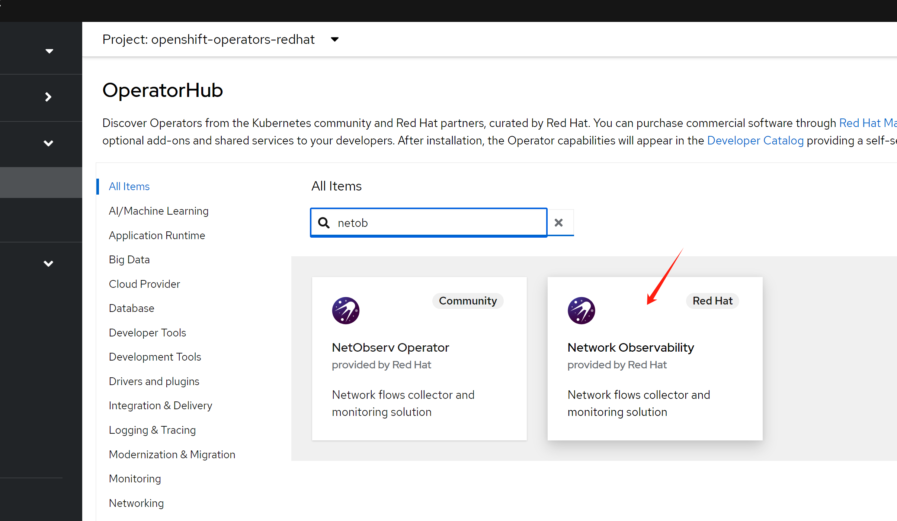
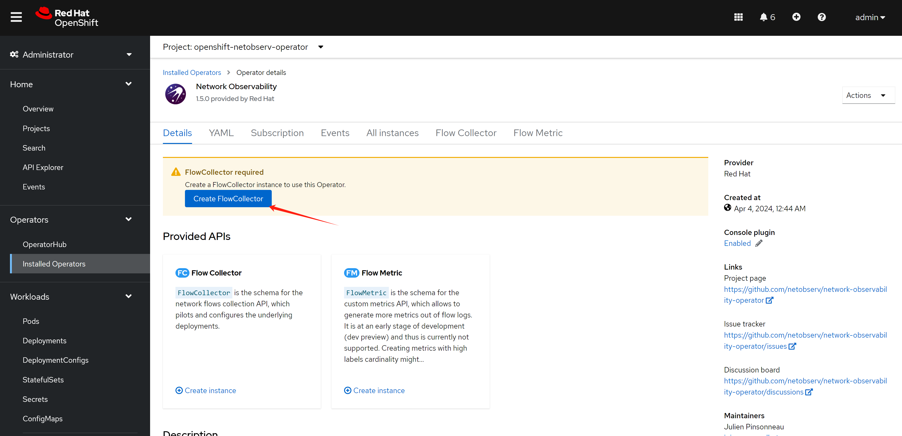
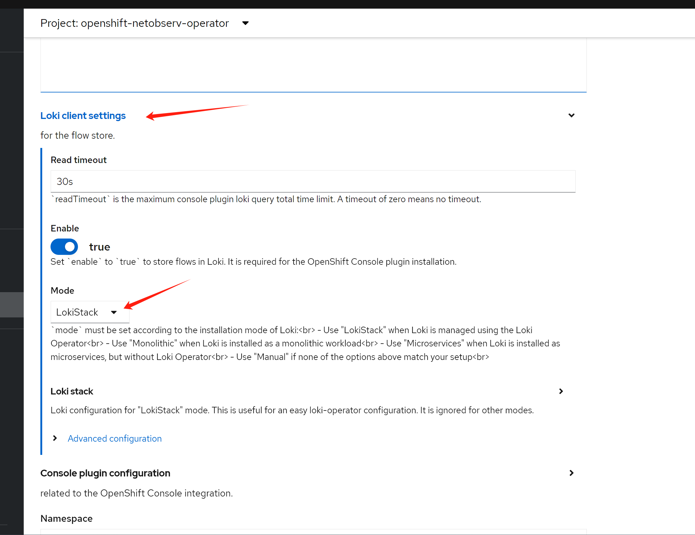
RTT tracing
enable rtt tracing, following official document.
- https://docs.openshift.com/container-platform/4.12/observability/network_observability/observing-network-traffic.html#network-observability-RTT_nw-observe-network-traffic
It is better to increate the memory limit, otherwise, the bpf agent pod will OOM. In my case, I increate to 2GB.
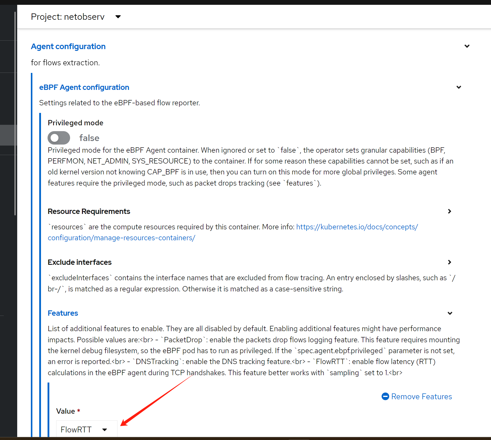
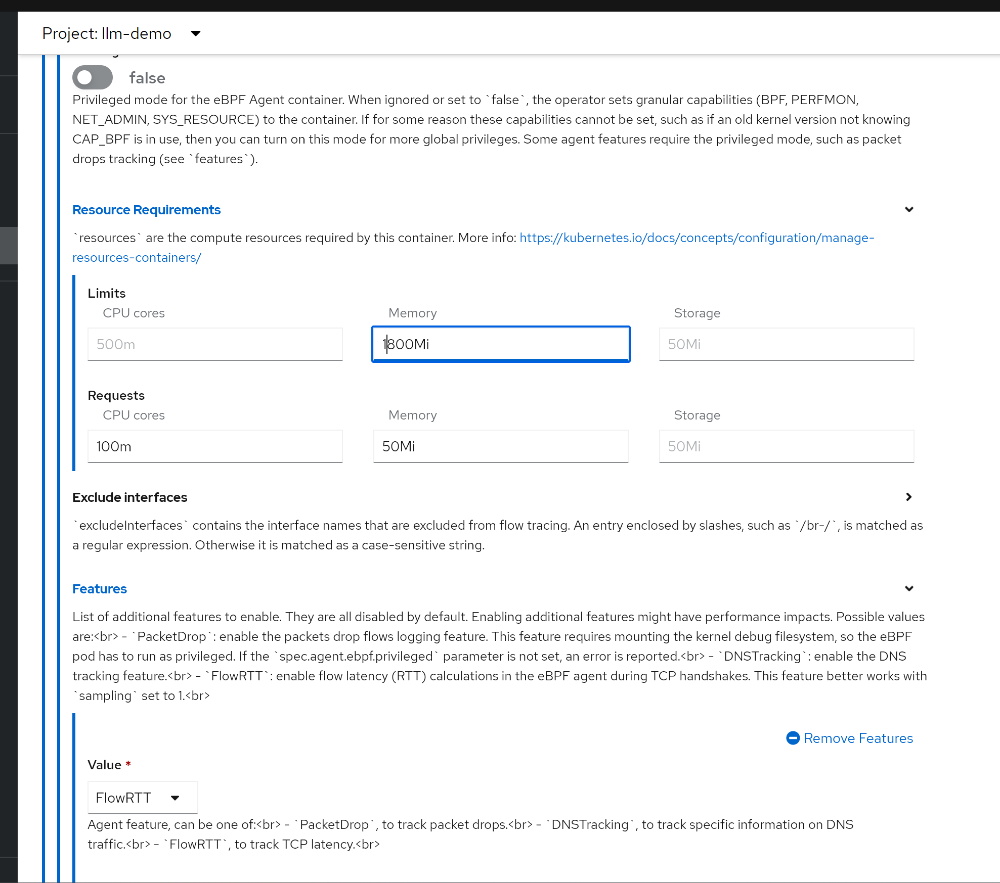
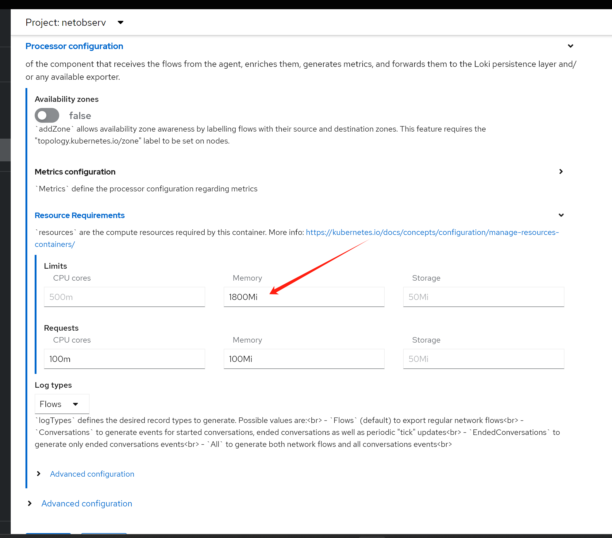
or if you want to change yaml directly
apiVersion: flows.netobserv.io/v1beta2
kind: FlowCollector
metadata:
name: cluster
spec:
namespace: netobserv
deploymentModel: Direct
agent:
type: eBPF
ebpf:
features:
- FlowRTT try it out
RRT
we can see RRT based on each flow. At this point, we did not introduct network latency on backend service, so the RTT is very low.
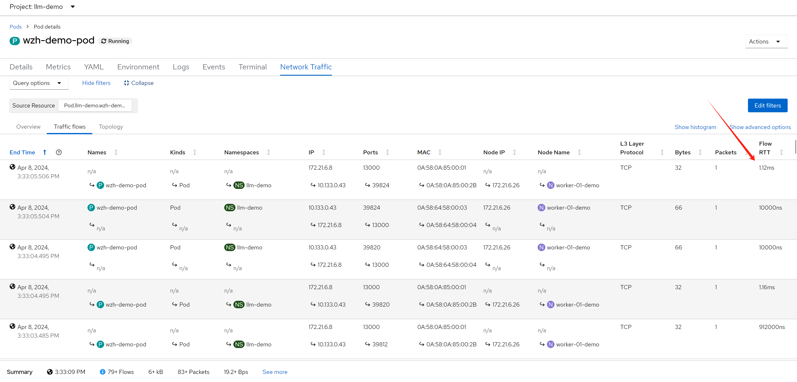
deploy egress IP
next, we will deploy egress IP on worker-02, and make traffic from worker-01 to worker-02, and then backend-service, and see the RTT value.
# label a node to host egress ip
oc label nodes worker-02-demo k8s.ovn.org/egress-assignable=""
# label a namespace with env
oc label ns llm-demo env=egress-demo
# create a egress ip
cat << EOF > ${BASE_DIR}/data/install/egressip.yaml
apiVersion: k8s.ovn.org/v1
kind: EgressIP
metadata:
name: egressips-prod
spec:
egressIPs:
- 172.21.6.22
namespaceSelector:
matchLabels:
env: egress-demo
EOF
oc create --save-config -f ${BASE_DIR}/data/install/egressip.yaml
# oc delete -f ${BASE_DIR}/data/install/egressip.yaml
oc get egressip -o json | jq -r '.items[] | [.status.items[].egressIP, .status.items[].node] | @tsv'
# 172.21.6.22 worker-02-demomake traffic and see result
then, we create backend http service, and introduce network latency by 1s.
# on backend host, 172.21.6.8
# create a web service
python3 -m http.server 13000
# ...
# 172.21.6.22 - - [08/Apr/2024 12:22:39] "GET / HTTP/1.1" 200 -
# 172.21.6.22 - - [08/Apr/2024 12:22:42] "GET / HTTP/1.1" 200 -
# 172.21.6.22 - - [08/Apr/2024 12:22:45] "GET / HTTP/1.1" 200 -
# ...
# using tc to traffic control / delay 1s
dnf install -y kernel-modules-extra # to install netem module
dnf install -y /usr/sbin/tc
iptables -A OUTPUT -t mangle -p tcp --sport 13000 -j MARK --set-mark 13000
tc qdisc del dev ens192 root
tc qdisc add dev ens192 root handle 1: htb
tc class add dev ens192 parent 1: classid 1:1 htb rate 100mbit
tc filter add dev ens192 protocol ip parent 1:0 prio 1 handle 13000 fw flowid 1:1
tc qdisc add dev ens192 parent 1:1 handle 10: netem delay 1s
tc qdisc show dev ens192
# qdisc htb 1: root refcnt 3 r2q 10 default 0 direct_packets_stat 453 direct_qlen 1000
# qdisc netem 10: parent 1:1 limit 1000 delay 1sand then, we create testing pod, and curl from the pod to backend service
# go back to helper
# create a dummy pod
cat << EOF > ${BASE_DIR}/data/install/demo1.yaml
---
kind: Pod
apiVersion: v1
metadata:
name: wzh-demo-pod
spec:
nodeSelector:
kubernetes.io/hostname: 'worker-01-demo'
restartPolicy: Always
containers:
- name: demo1
image: >-
quay.io/wangzheng422/qimgs:rocky9-test
env:
- name: key
value: value
command: [ "/bin/bash", "-c", "--" ]
args: [ "tail -f /dev/null" ]
# imagePullPolicy: Always
EOF
oc apply -n llm-demo -f ${BASE_DIR}/data/install/demo1.yaml
# oc delete -n llm-demo -f ${BASE_DIR}/data/install/demo1.yaml
oc exec -n llm-demo wzh-demo-pod -it -- bash
# in the container terminal
while true; do curl http://172.21.6.8:13000 && sleep 1; done;
# while true; do curl http://192.168.77.8:13000/cache.db > /dev/null; done;and you get the result like this, you can see the RTT become 1s.:
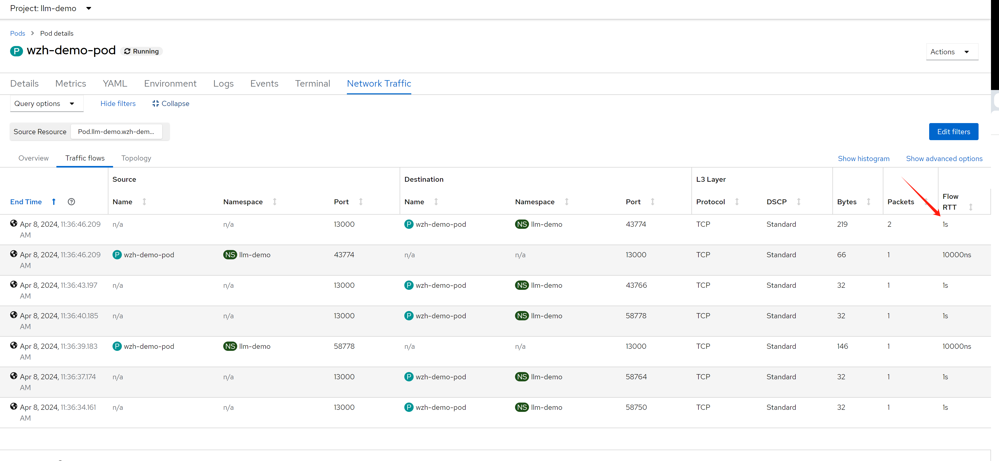
after setting the columnes, we can see something interesting.
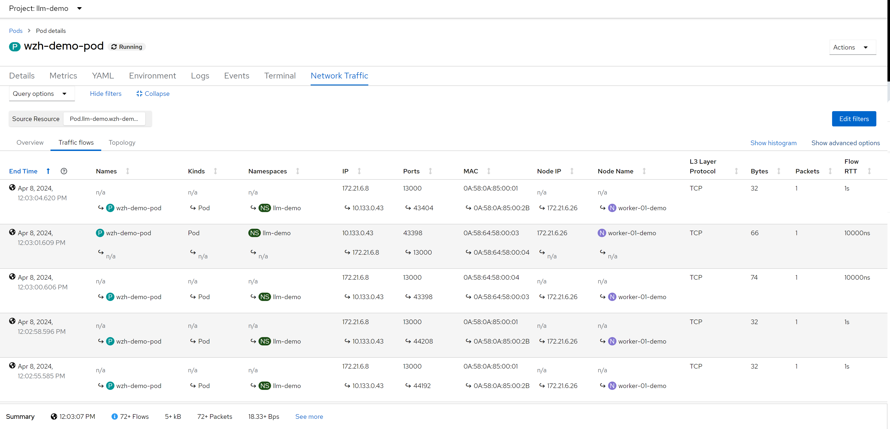
as we can see 4 mac address, lets check what they are:
- 0A:58:0A:85:00:01 -> RouterToSwitch, on worker-01
- 0A:58:0A:85:00:2B -> pod’s ip, on worker-01
- 0A:58:64:58:00:03 -> RouterToTransitSwitch, on worker-01
- 0A:58:64:58:00:04 -> TransitSwitchToRouter, on worker-02
VAR_POD=`oc get pod -n openshift-ovn-kubernetes -o wide | grep worker-01-demo | awk '{print $1}'`
oc exec -it ${VAR_POD} -c ovn-controller -n openshift-ovn-kubernetes -- ovn-nbctl show | grep -i 0A:58:0A:85:00:01 -A 10 -B 10
# router 032109ba-320f-4790-a3e6-44f305fa2397 (ovn_cluster_router)
# port rtoj-ovn_cluster_router
# mac: "0a:58:64:40:00:01"
# networks: ["100.64.0.1/16"]
# port rtos-worker-01-demo
# mac: "0a:58:0a:85:00:01"
# networks: ["10.133.0.1/23"]
# gateway chassis: [163c3827-a827-450e-931c-65eaab2d67d8]
# port rtots-worker-01-demo
# mac: "0a:58:64:58:00:03"
# networks: ["100.88.0.3/16"]
oc exec -it ${VAR_POD} -c ovn-controller -n openshift-ovn-kubernetes -- ovn-nbctl show | grep -i 0A:58:0A:85:00:2B -A 10 -B 20
# switch 2ae42bdd-9dde-43d6-9c1d-46b77298aebf (worker-01-demo)
# port llm-demo_wzh-demo-pod
# addresses: ["0a:58:0a:85:00:2b 10.133.0.43"]
oc exec -it ${VAR_POD} -c ovn-controller -n openshift-ovn-kubernetes -- ovn-nbctl show | grep -i 0A:58:64:58:00:03 -A 10 -B 20
# router 032109ba-320f-4790-a3e6-44f305fa2397 (ovn_cluster_router)
# port rtoj-ovn_cluster_router
# mac: "0a:58:64:40:00:01"
# networks: ["100.64.0.1/16"]
# port rtos-worker-01-demo
# mac: "0a:58:0a:85:00:01"
# networks: ["10.133.0.1/23"]
# gateway chassis: [163c3827-a827-450e-931c-65eaab2d67d8]
# port rtots-worker-01-demo
# mac: "0a:58:64:58:00:03"
# networks: ["100.88.0.3/16"]
oc exec -it ${VAR_POD} -c ovn-controller -n openshift-ovn-kubernetes -- ovn-nbctl show | grep -i 0A:58:64:58:00:04 -A 10 -B 20
# switch ceda4a6b-cac9-49d8-bc7c-7a419e7c51bd (transit_switch)
# port tstor-worker-01-demo
# type: router
# router-port: rtots-worker-01-demo
# port tstor-worker-02-demo
# type: remote
# addresses: ["0a:58:64:58:00:04 100.88.0.4/16"]
# port tstor-master-01-demo
# type: remote
# addresses: ["0a:58:64:58:00:02 100.88.0.2/16"]
oc exec -it ${VAR_POD} -c ovn-controller -n openshift-ovn-kubernetes -- ovn-nbctl list Logical_Router_Port | grep -i 0A:58:0A:85:00:01 -A 10 -B 10
# _uuid : 53b1cec8-ff5a-4fba-896d-da3bdbea07c1
# enabled : []
# external_ids : {}
# gateway_chassis : [4b714c8d-1508-4a28-ab25-c8df85457fbb]
# ha_chassis_group : []
# ipv6_prefix : []
# ipv6_ra_configs : {}
# mac : "0a:58:0a:85:00:01"
# name : rtos-worker-01-demo
# networks : ["10.133.0.1/23"]
# options : {}
# peer : []
# status : {hosting-chassis="163c3827-a827-450e-931c-65eaab2d67d8"}
oc exec -it ${VAR_POD} -c ovn-controller -n openshift-ovn-kubernetes -- ovn-nbctl list Logical_Switch_Port | grep -i 0A:58:0A:85:00:2B -A 10 -B 10
# _uuid : 641b3330-2216-4a6a-abbc-ecea5c888adc
# addresses : ["0a:58:0a:85:00:2b 10.133.0.43"]
# dhcpv4_options : []
# dhcpv6_options : []
# dynamic_addresses : []
# enabled : []
# external_ids : {namespace=llm-demo, pod="true"}
# ha_chassis_group : []
# mirror_rules : []
# name : llm-demo_wzh-demo-pod
# options : {iface-id-ver="20b12566-0596-4b45-8ed6-9bd4ea68c649", requested-chassis=worker-01-demo}
# parent_name : []
# port_security : ["0a:58:0a:85:00:2b 10.133.0.43"]
# tag : []
# tag_request : []
# type : ""
# up : true
oc exec -it ${VAR_POD} -c ovn-controller -n openshift-ovn-kubernetes -- ovn-nbctl list Logical_Router_Port | grep -i 0A:58:64:58:00:03 -A 10 -B 10
# _uuid : 5e750f8b-0951-4b5f-b415-a6f870dfc3a3
# enabled : []
# external_ids : {}
# gateway_chassis : []
# ha_chassis_group : []
# ipv6_prefix : []
# ipv6_ra_configs : {}
# mac : "0a:58:64:58:00:03"
# name : rtots-worker-01-demo
# networks : ["100.88.0.3/16"]
# options : {mcast_flood="true"}
# peer : []
# status : {}
oc exec -it ${VAR_POD} -c ovn-controller -n openshift-ovn-kubernetes -- ovn-nbctl list Logical_Switch_Port | grep -i 0A:58:64:58:00:04 -A 10 -B 10
# _uuid : 225dc4bd-6fe0-4a49-a61f-ab20576fb159
# addresses : ["0a:58:64:58:00:04 100.88.0.4/16"]
# dhcpv4_options : []
# dhcpv6_options : []
# dynamic_addresses : []
# enabled : []
# external_ids : {node=worker-02-demo}
# ha_chassis_group : []
# mirror_rules : []
# name : tstor-worker-02-demo
# options : {requested-tnl-key="4"}
# parent_name : []
oc exec -it ${VAR_POD} -c ovn-controller -n openshift-ovn-kubernetes -- ovn-nbctl list Logical_Router | grep name
# name : GR_worker-01-demo
# name : ovn_cluster_router
oc exec -it ${VAR_POD} -c ovn-controller -n openshift-ovn-kubernetes -- ovn-nbctl lr-list
# f462fab4-9a08-4dec-ab6b-2576c31908e2 (GR_worker-01-demo)
# 032109ba-320f-4790-a3e6-44f305fa2397 (ovn_cluster_router)
oc exec -it ${VAR_POD} -c ovn-controller -n openshift-ovn-kubernetes -- ovn-nbctl lr-nat-list GR_worker-01-demo
# TYPE GATEWAY_PORT EXTERNAL_IP EXTERNAL_PORT LOGICAL_IP EXTERNAL_MAC LOGICAL_PORT
# snat 172.21.6.26 10.133.0.3
# snat 172.21.6.26 10.133.0.6
# snat 172.21.6.26 10.133.0.103
# snat 172.21.6.26 10.133.0.5
# snat 172.21.6.26 10.133.0.10
# snat 172.21.6.26 10.133.0.20
# snat 172.21.6.26 10.133.0.96
# snat 172.21.6.26 10.133.0.7
# snat 172.21.6.26 10.133.0.11
# snat 172.21.6.26 10.133.0.89
# snat 172.21.6.26 10.133.0.9
# snat 172.21.6.26 10.133.0.91
# snat 172.21.6.26 10.133.0.4
# snat 172.21.6.26 10.133.0.87
# snat 172.21.6.26 10.133.0.92
# snat 172.21.6.26 10.133.0.95
# snat 172.21.6.26 10.133.0.83
# snat 172.21.6.26 10.133.0.12
# snat 172.21.6.26 10.133.0.8
# snat 172.21.6.26 10.133.0.118
# snat 172.21.6.26 10.133.0.86
# snat 172.21.6.26 100.64.0.3
# snat 172.21.6.26 10.133.0.88
# snat 172.21.6.26 10.133.0.13
# snat 172.21.6.26 10.133.0.43
# snat 172.21.6.26 10.133.0.90
# snat 172.21.6.26 10.133.0.93
oc exec -it ${VAR_POD} -c ovn-controller -n openshift-ovn-kubernetes -- ovn-sbctl dump-flows | grep 172.21.6.22
# no result
# search on worker-02
VAR_POD=`oc get pod -n openshift-ovn-kubernetes -o wide | grep worker-02-demo | awk '{print $1}'`
oc exec -it ${VAR_POD} -c ovn-controller -n openshift-ovn-kubernetes -- ovn-nbctl lr-list
# 373ab1b4-7948-4370-a5ab-17f9f3d4b742 (GR_worker-02-demo)
# b23e792d-a79a-47b5-a4c3-c2716ffdb55b (ovn_cluster_router)
oc exec -it ${VAR_POD} -c ovn-controller -n openshift-ovn-kubernetes -- ovn-nbctl lr-nat-list GR_worker-02-demo
# TYPE GATEWAY_PORT EXTERNAL_IP EXTERNAL_PORT LOGICAL_IP EXTERNAL_MAC LOGICAL_PORT
# snat 172.21.6.22 10.133.0.43
# snat 172.21.6.27 10.134.0.5
# snat 172.21.6.27 10.134.0.12
# snat 172.21.6.27 100.64.0.4
# snat 172.21.6.27 10.134.0.4
# snat 172.21.6.27 10.134.0.7
# snat 172.21.6.27 10.134.0.3
# snat 172.21.6.27 10.134.0.6
# snat 172.21.6.27 10.134.0.8
# check mac address again
oc exec -it ${VAR_POD} -c ovn-controller -n openshift-ovn-kubernetes -- ovn-nbctl show | grep -i 0A:58:0A:85:00:01 -A 10 -B 10
# no result
oc exec -it ${VAR_POD} -c ovn-controller -n openshift-ovn-kubernetes -- ovn-nbctl show | grep -i 0A:58:0A:85:00:2B -A 10 -B 20
# no result
oc exec -it ${VAR_POD} -c ovn-controller -n openshift-ovn-kubernetes -- ovn-nbctl show | grep -i 0A:58:64:58:00:03 -A 10 -B 20
# switch 858be777-d262-4db8-9c02-7ed86d85d8a6 (transit_switch)
# port tstor-worker-02-demo
# type: router
# router-port: rtots-worker-02-demo
# port tstor-worker-01-demo
# type: remote
# addresses: ["0a:58:64:58:00:03 100.88.0.3/16"]
# port tstor-master-01-demo
# type: remote
# addresses: ["0a:58:64:58:00:02 100.88.0.2/16"]
oc exec -it ${VAR_POD} -c ovn-controller -n openshift-ovn-kubernetes -- ovn-nbctl show | grep -i 0A:58:64:58:00:04 -A 10 -B 20
# router b23e792d-a79a-47b5-a4c3-c2716ffdb55b (ovn_cluster_router)
# port rtots-worker-02-demo
# mac: "0a:58:64:58:00:04"
# networks: ["100.88.0.4/16"]
# port rtos-worker-02-demo
# mac: "0a:58:0a:86:00:01"
# networks: ["10.134.0.1/23"]
# gateway chassis: [0e25df85-8df7-451a-bc4e-e59173042ccd]
# port rtoj-ovn_cluster_router
# mac: "0a:58:64:40:00:01"
# networks: ["100.64.0.1/16"]
oc exec -it ${VAR_POD} -c ovn-controller -n openshift-ovn-kubernetes -- ovn-sbctl dump-flows | grep 172.21.6.22
# table=3 (lr_in_ip_input ), priority=90 , match=(arp.op == 1 && arp.tpa == 172.21.6.22), action=(eth.dst = eth.src; eth.src = xreg0[0..47]; arp.op = 2; /* ARP reply */ arp.tha = arp.sha; arp.sha = xreg0[0..47]; arp.tpa <-> arp.spa; outport = inport; flags.loopback = 1; output;)
# table=4 (lr_in_unsnat ), priority=90 , match=(ip && ip4.dst == 172.21.6.22), action=(ct_snat;)
# table=3 (lr_out_snat ), priority=33 , match=(ip && ip4.src == 10.133.0.43 && (!ct.trk || !ct.rpl)), action=(ct_snat(172.21.6.22);)
# table=27(ls_in_l2_lkup ), priority=80 , match=(flags[1] == 0 && arp.op == 1 && arp.tpa == 172.21.6.22), action=(clone {outport = "etor-GR_worker-02-demo"; output; }; outport = "_MC_flood_l2"; output;)
# table=27(ls_in_l2_lkup ), priority=80 , match=(flags[1] == 0 && arp.op == 1 && arp.tpa == 172.21.6.22), action=(outport = "jtor-GR_worker-02-demo"; output;)
Here is the ovn logical network topology:
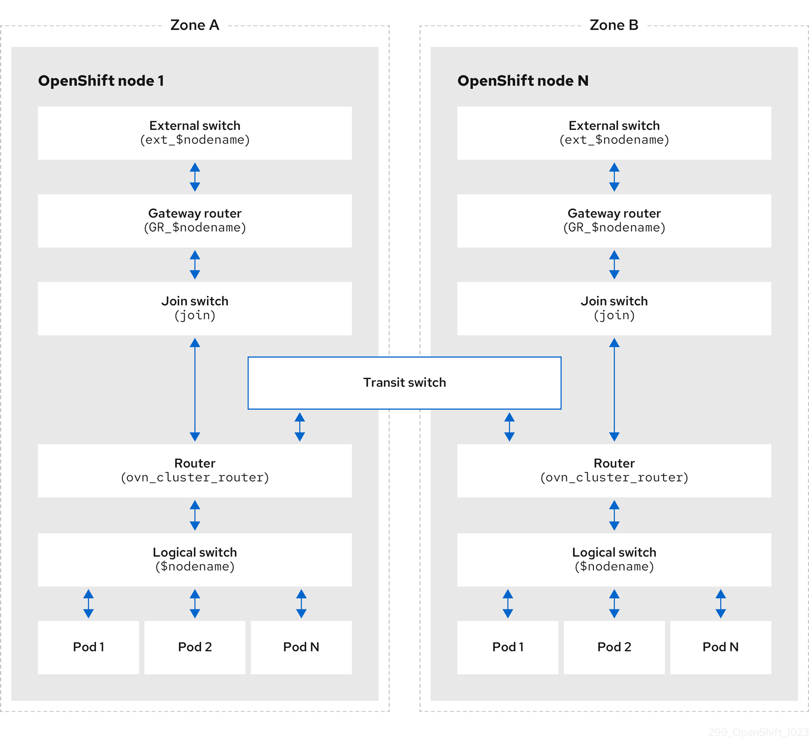
based on our case, lets draw the network topology:
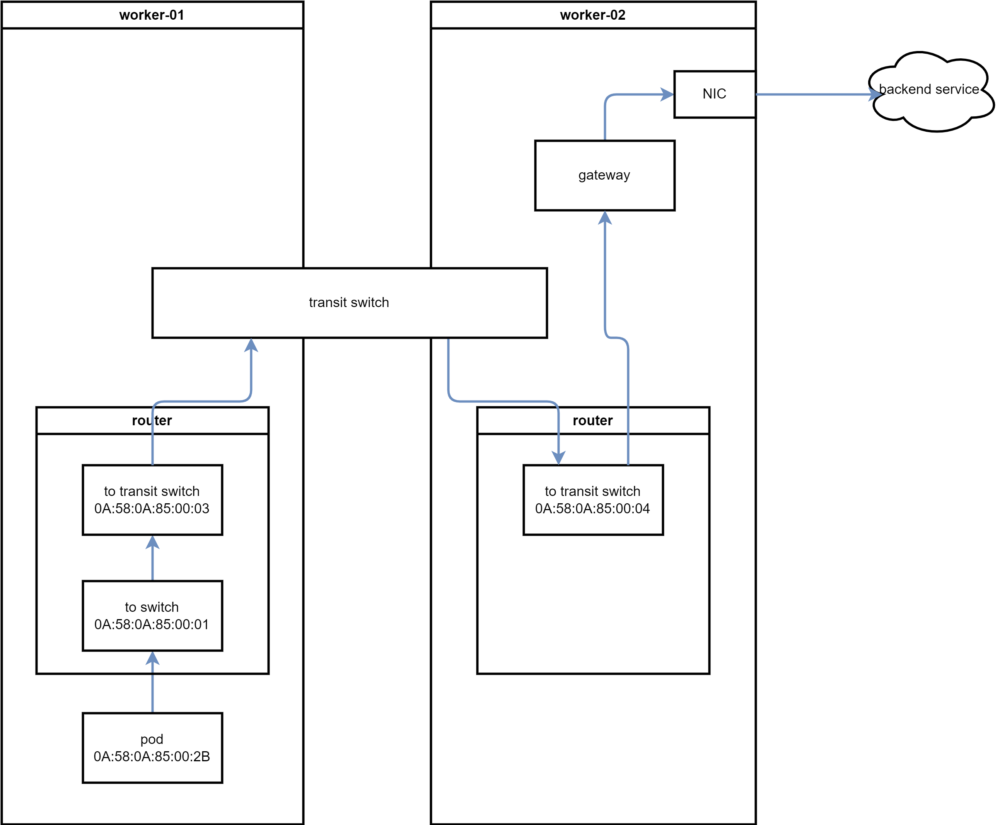
try with a java app
we will create a simple java app, it will access http request, send a dummy http request to 172.21.6.8, and return. So we can see the whole path result.
the sample java app’s source project is here:
- https://github.com/wangzheng422/simple-java-http-server
# go back to helper
# create a dummy pod
cat << EOF > ${BASE_DIR}/data/install/demo1.yaml
---
apiVersion: v1
kind: Service
metadata:
name: wzh-demo-service
spec:
ports:
- name: service-port
port: 80
protocol: TCP
targetPort: 8080
selector:
app: wzh-demo-pod
---
apiVersion: route.openshift.io/v1
kind: Route
metadata:
name: wzh-demo
spec:
to:
kind: Service
name: wzh-demo-service
port:
targetPort: service-port
---
kind: Pod
apiVersion: v1
metadata:
name: wzh-demo-pod
labels:
app: wzh-demo-pod
# annotations:
# instrumentation.opentelemetry.io/inject-java: "true"
spec:
nodeSelector:
kubernetes.io/hostname: 'worker-01-demo'
restartPolicy: Always
containers:
- name: demo1
image: >-
quay.io/wangzheng422/qimgs:simple-java-http-server-2024.04.24
env:
- name: WZH_URL
value: "http://172.21.6.8:13000/singbox.config.json"
# command: [ "/bin/bash", "-c", "--" ]
# args: [ "tail -f /dev/null" ]
# imagePullPolicy: Always
# ---
# kind: Pod
# apiVersion: v1
# metadata:
# name: wzh-demo-util
# spec:
# nodeSelector:
# kubernetes.io/hostname: 'worker-01-demo'
# restartPolicy: Always
# containers:
# - name: demo1
# image: >-
# quay.io/wangzheng422/qimgs:rocky9-test
# env:
# - name: key
# value: value
# command: [ "/bin/bash", "-c", "--" ]
# args: [ "tail -f /dev/null" ]
# # imagePullPolicy: Always
EOF
oc apply -n llm-demo -f ${BASE_DIR}/data/install/demo1.yaml
# oc delete -n llm-demo -f ${BASE_DIR}/data/install/demo1.yaml
# while true; do
# curl -s http://wzh-demo-llm-demo.apps.demo-gpu.wzhlab.top/sendRequest
# sleep 1
# done
siege -q -c 1000 http://wzh-demo-llm-demo.apps.demo-gpu.wzhlab.top/sendRequestlets see the result
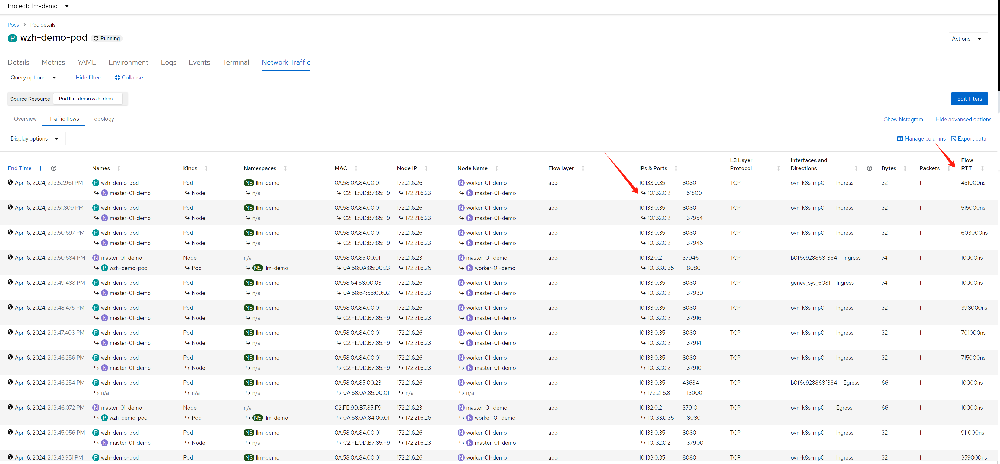
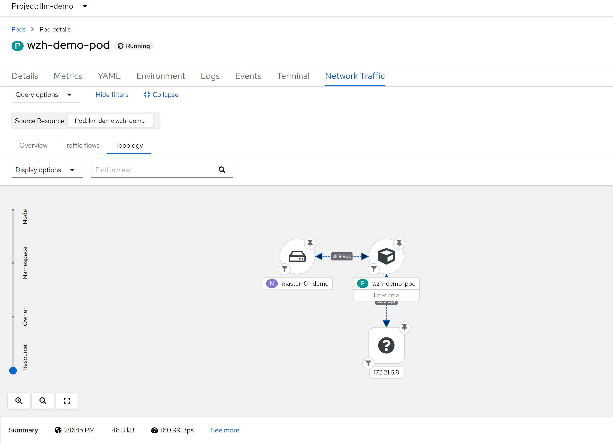
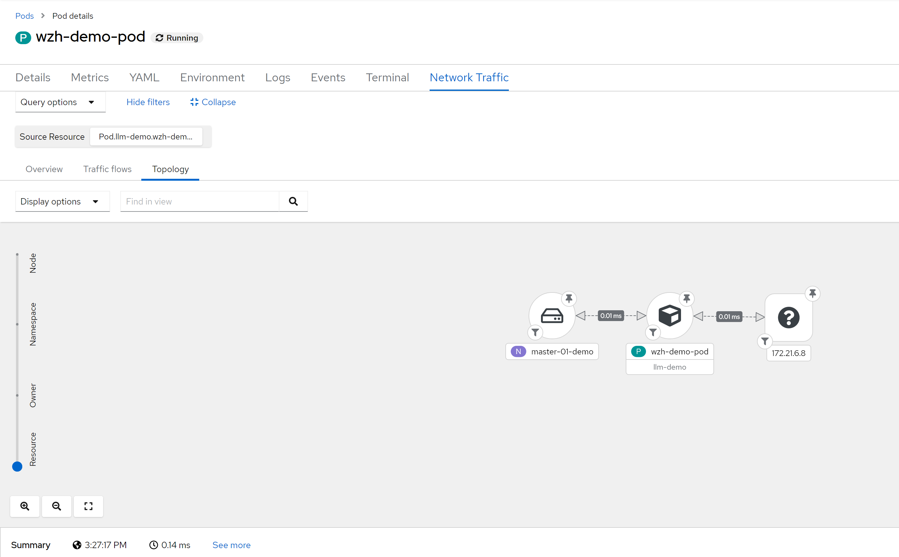
so, for ingress traffic, it can show RTT between ingress router / haproxy to pod. What is ip address 10.132.0.2 ? It is management ovn port on master-01, master-01 runs the ingress router / haproxy in host network mode.
# on master-01, which is 172.21.6.23
ip a
# ....
# 4: ovn-k8s-mp0: <BROADCAST,MULTICAST,UP,LOWER_UP> mtu 1400 qdisc noqueue state UNKNOWN group default qlen 1000
# link/ether c2:fe:9d:b7:85:f9 brd ff:ff:ff:ff:ff:ff
# inet 10.132.0.2/23 brd 10.132.1.255 scope global ovn-k8s-mp0
# valid_lft forever preferred_lft forever
# inet6 fe80::c0fe:9dff:feb7:85f9/64 scope link
# valid_lft forever preferred_lft forever
# ....
# on helper
oc get pod -o wide -n openshift-ingress
# NAME READY STATUS RESTARTS AGE IP NODE NOMINATED NODE READINESS GATES
# router-default-8575546d67-cpzvf 1/1 Running 23 (118m ago) 13d 172.21.6.23 master-01-demo <none> <none>
oc get node -o wide
# NAME STATUS ROLES AGE VERSION INTERNAL-IP EXTERNAL-IP OS-IMAGE KERNEL-VERSION CONTAINER-RUNTIME
# master-01-demo Ready control-plane,master,worker 74d v1.27.11+d8e449a 172.21.6.23 <none> Red Hat Enterprise Linux CoreOS 414.92.202403081134-0 (Plow) 5.14.0-284.55.1.el9_2.x86_64 cri-o://1.27.4-3.rhaos4.14.git914bcba.el9
# worker-01-demo Ready worker 74d v1.27.11+d8e449a 172.21.6.26 <none> Red Hat Enterprise Linux CoreOS 414.92.202403081134-0 (Plow) 5.14.0-284.55.1.el9_2.x86_64 cri-o://1.27.4-3.rhaos4.14.git914bcba.el9
# worker-02-demo Ready worker 4d v1.27.11+d8e449a 172.21.6.27 <none> Red Hat Enterprise Linux CoreOS 414.92.202403081134-0 (Plow) 5.14.0-284.55.1.el9_2.x86_64 cri-o://1.27.4-3.rhaos4.14.git914bcba.el9performance issue
bpf agent will cause 80GB memory, for sample:1
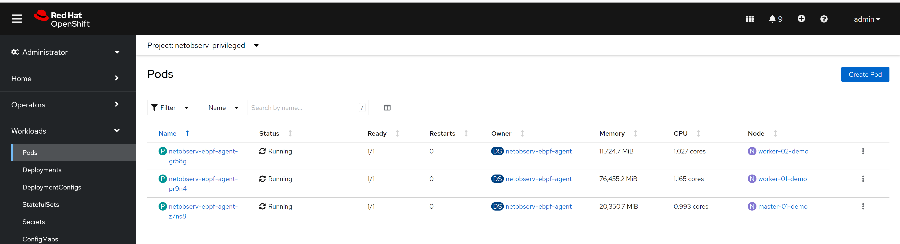
And due to flow drop, you can not see traffic data correct, RTT is incorrect too.
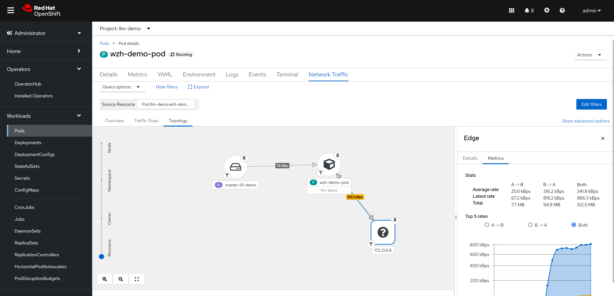
- Investigate alternative solutions to do no sampling but still scale
- Investigate flow-based sampling
- PoC adaptative sampling
So, for production environments, carefully plan, test, and ensure performance is acceptable.
try without loki
remove loki config
remove every loki config, because we will not use them in this case
install netobserv
configure netflow collector, disable loki, and enable RTT feature.
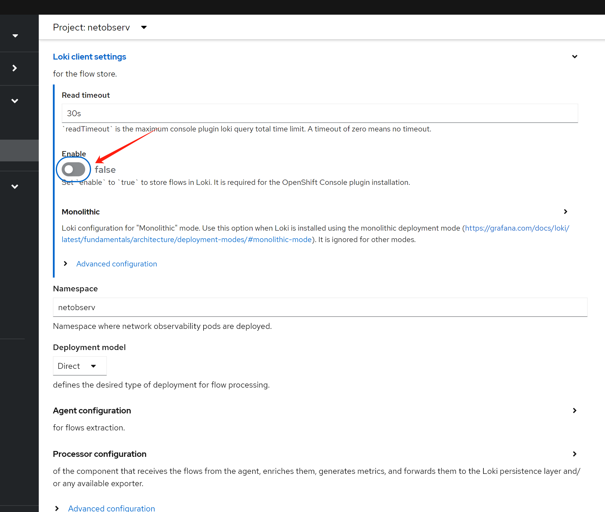
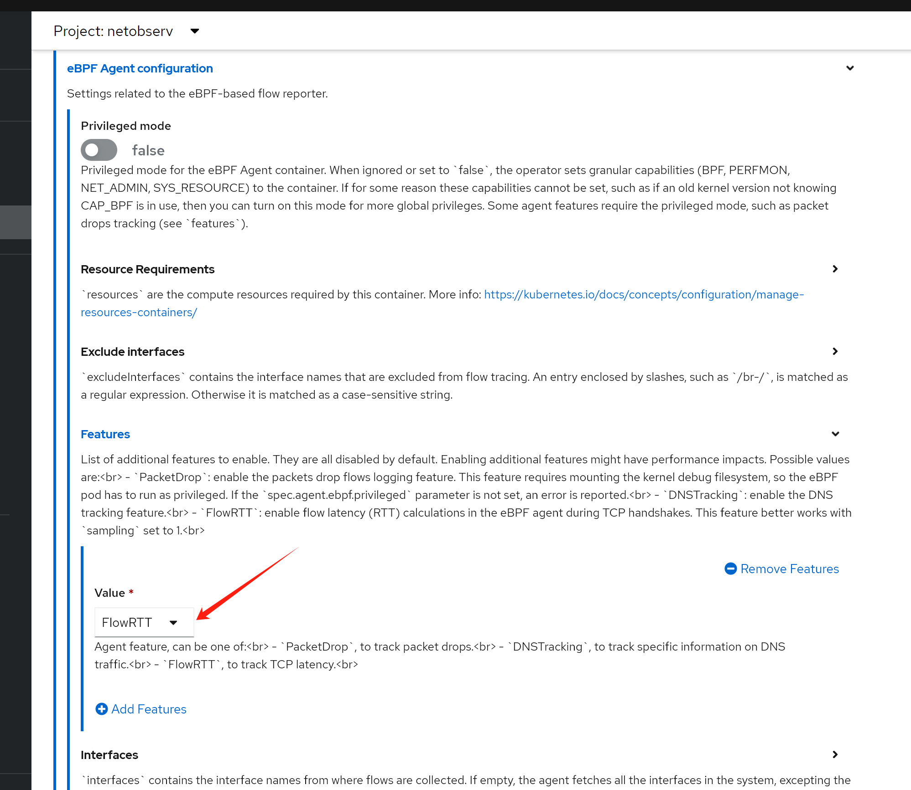
after a moment, you can see the result from dashboard. Because we do not use loki, so data goes to promethus only.
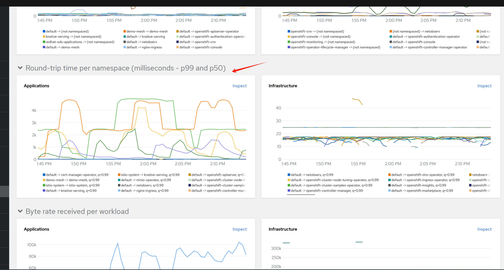
and you can see, only namespace level data is collected and displayed.
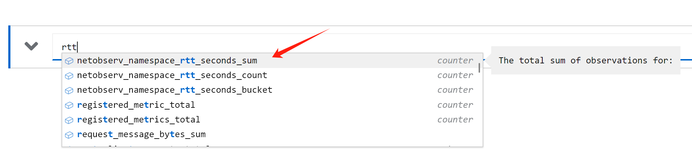
see the result
Principles
ebpf src
- https://github.com/netobserv/netobserv-ebpf-agent/blob/main/bpf/flows.c
Look at the source code, these 2 sentences are to register tc bpf hooks
SEC("tc_ingress")
int ingress_flow_parse(struct __sk_buff *skb) {
return flow_monitor(skb, INGRESS);
}
SEC("tc_egress")
int egress_flow_parse(struct __sk_buff *skb) {
return flow_monitor(skb, EGRESS);
}limitation
- ebpf agent stability and performance.
- storage and query performance.
tips
- sometimes, the netobserv-epf- OOM, and console do not work. restart node to fix.
ovn short word
- https://github.com/openshift/ovn-kubernetes/blob/master/go-controller/pkg/types/const.go
JoinSwitchPrefix = "join_"
ExternalSwitchPrefix = "ext_"
GWRouterPrefix = "GR_"
GWRouterLocalLBPostfix = "_local"
RouterToSwitchPrefix = "rtos-"
InterPrefix = "inter-"
HybridSubnetPrefix = "hybrid-subnet-"
SwitchToRouterPrefix = "stor-"
JoinSwitchToGWRouterPrefix = "jtor-"
GWRouterToJoinSwitchPrefix = "rtoj-"
DistRouterToJoinSwitchPrefix = "dtoj-"
JoinSwitchToDistRouterPrefix = "jtod-"
EXTSwitchToGWRouterPrefix = "etor-"
GWRouterToExtSwitchPrefix = "rtoe-"
EgressGWSwitchPrefix = "exgw-"
TransitSwitchToRouterPrefix = "tstor-"
RouterToTransitSwitchPrefix = "rtots-"search container on interface name
ip a | grep ace0354dc9ca1cb -A 5
# 67: ace0354dc9ca1cb@if2: <BROADCAST,MULTICAST,UP,LOWER_UP> mtu 1400 qdisc noqueue master ovs-system state UP group default qlen 1000
# link/ether 3e:3a:b4:70:28:c0 brd ff:ff:ff:ff:ff:ff link-netns 301bf28d-f04c-46a6-b34c-800b34ce4c76
# inet6 fe80::3c3a:b4ff:fe70:28c0/64 scope link
# valid_lft forever preferred_lft forever
# The namespace ID we're looking for
namespace_id="562f3b52-881a-4057-b8fd-f17ceaf9096b"
# Get all pod IDs
pod_ids=$(crictl pods -q)
# Loop through each pod ID
for pod_id in $pod_ids; do
# Inspect the pod and get the network namespace
network_ns=$(crictl inspectp $pod_id | jq -r '.info.runtimeSpec.linux.namespaces[] | select(.type=="network") | .path')
# Check if the network namespace contains the namespace ID
if [[ $network_ns == *"$namespace_id"* ]]; then
echo "Pod $pod_id is in the namespace $namespace_id"
crictl pods --id $pod_id
fi
done
oc debug node
# node debug with bpftop
oc debug node/worker-01-demo --image=quay.io/wangzheng422/qimgs:rocky9-test-2024.04.28